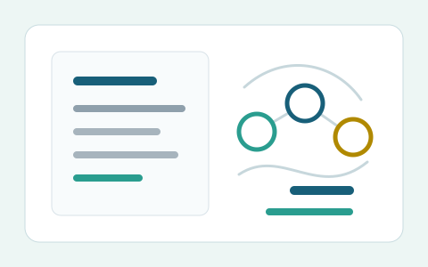
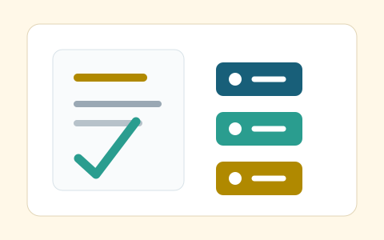

投稿与收录
内容
Content List
内容列表
按科室和内容类型筛选具体条目，点击后进入对应的教程、视频、题库、标准病人训练、科普或 Blog 页面。
科室
内容类型

Tutorial医学通识
医学 AI 入门
理解大语言模型在医学文本、知识整理和临床学习中的基本能力边界。
视频医学通识
医学 AI 视频导入
通过视频快速进入 Freedom AI 内容语境，适合课前预习和专题导入。
Tutorial心血管
医学 RAG 与指南问答
学习指南切片、检索、来源引用和答案审核，支持专科指南学习。
Tutorial临床科研
医学文献结构化阅读
把论文整理为研究设计、结局指标、主要发现和局限性，服务组会与科研训练。

题库医学通识
医学 AI 基础概念自测
围绕 LLM、RAG、prompt、评测指标和医学 AI 基础概念进行快速检查。
题库临床科研
论文阅读与证据溯源题
训练 PICO、研究设计、证据等级、引用来源和外推限制的判断。
标准病人医学教育
初诊问诊路径训练
用标准病人脚本练习开放式问诊、重点追问、病史完整性和沟通反馈。
标准病人心血管
胸痛问诊与危险信号
围绕胸痛标准化病例，训练鉴别诊断、危险信号识别和下一步检查选择。
视频影像病理
多模态医学 AI 视频清单
整理影像、病理、报告和多源数据整合相关视频，支持多模态专题学习。
题库影像病理
影像报告结构化练习
练习从影像报告中提取关键发现、结构化字段和后续建议。
科普入门
医学 AI 是什么
解释大语言模型、多模态模型、知识库问答和智能体的基本概念。
科普安全
为什么不能替代医生
用真实边界说明幻觉、责任、隐私、适用人群和人工复核。
科普数据
医疗数据如何脱敏
科普姓名、住院号、影像号、日期、罕见病信息等隐私风险。
科普工具
普通人如何看 AI 回答
关注来源、证据等级、禁忌、建议去医院的信号和不确定表达。
当前标签下暂无内容。